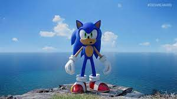

Launching the Game
This is the day everyone is excited about and eagerly waiting for. During this phase, the game is practically finished and might have minor flaws. Due to this, the development teams behind the game are continuing to improve it and bring more details. While this is going on, testers are collecting the initial feedback from real users to give back to developers to make any important changes.
What Happens Next - Post Production
After a game is launched, studios need to be monitoring their games to make sure their games continue to have a certain level of security and performance. Typically, studios will regularly release updates to meet the technical requirements of their chosen platform. Many companies also continue to support their games with in-game content updates to keep the game fresh and keep their users engaged in their game.